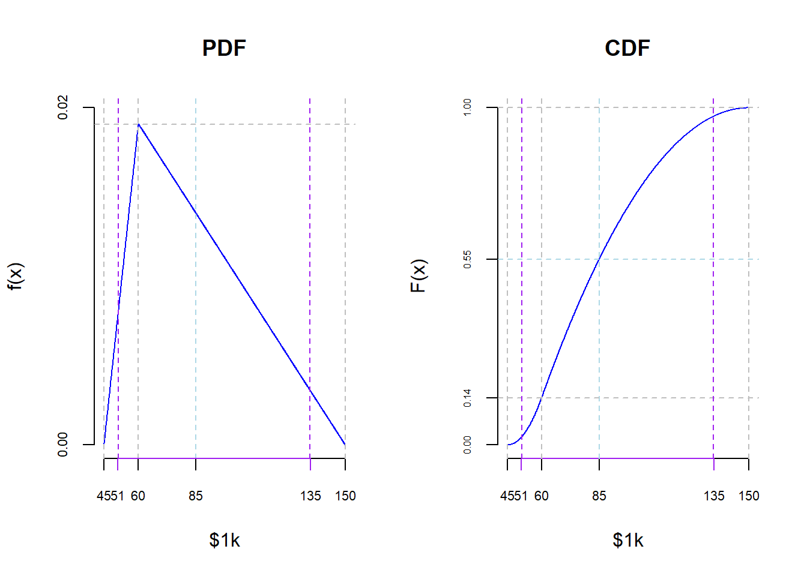

In a quantitative risk calculation, a triangle distribution is a probability distribution that assumes a minimum, maximum, and most likely value for a variable. It is often used when the available data is limited, and we have some knowledge about the range of possible values.
Cyber security risk management

Figure 1: Risk management process
The risk management process has four stages:
- Identify risk - assess the organization’s environment to identify current or potential risks that could affect business operations.
- Assess risk - analyze likelihood and impact to the organization of the identified risks
- Manage risk - define measures to mitigate the risks
- Monitor controls - continuously evaluate control effectiveness and add or adjust controls as needed
Quantitative cyber security risk assessments
Risk is a function of the probability of occurrence of an event and the impact of that event on the business:

Figure 2: Risk Equation
Cyber security risk assessments can be performed using qualitative or quantitative methods. In this post we will discuss how the triangular distribution can be used for simple and straightforward quantitative cyber security risk assessments. In a subsequent post, we will discuss how the Monte Carlo simulation can be used for a more sophisticated approach to quantitative cyber security risk assessments.
Example
Company XYZ has assessed the potential financial impact of a data breach. Based on historical data and expert judgment, they estimate the following values for the financial impact (in USD) with a triangle distribution:
Minimum financial impact: a = USD 40,000
Most likely financial impact (mode): c = USD 150,000
Maximum financial impact: b = USD 60,000
Results
The triangle distribution parameters are:
Expected value: USD 85,000
Probability of the expected value: 0.553 (55%)
Confidence Interval [lower bound]: USD 51,000
Confidence Interval [upper band]: USD 135,000
Interpretation
The 95% confidence interval covers almost the entire range of the triangular distribution.
The probability of the expected value is only 55%.
These two conclusions tell us that the expected value is characterized by a high degree of uncertainty which is typical of a skewed triangular distribution.
Confidence interval
Various methods can be used to calculate a confidence interval for the triangular distribution. It is important to note that these methods are based on assumptions and may not always be accurate, especially if the triangular distribution is highly asymmetric. In such cases, more advanced statistical methods may be required.
Expected value
The expected value is a commonly used measurement in quantitative risk management. The expected value provides a single “numerical summary” of a probability distribution. However, it is important to note that relying solely on the expected value may have limitations. The probability of the expected value, the confidence interval, and a good understanding of the underlying probability distribution help to better understand the risk profile and make more comprehensive risk management decisions.
Opinion Pooling
Linear opinion pooling (LOP)
The results of triangular distributions can be aggregated by combining multiple triangular distributions to represent the overall uncertainty. This can be done by taking the minimum of the minimum values, the maximum of the maximum values, and aggregating the modes to form a new triangular distribution that represents the combined uncertainty. One approach to this is opinion pooling.
The following formula can be used for linear opinion pooling: \[LOP = \sum_{i=1}^{N} (w_i \times o_i)\] where:
\(N\) is the number of experts resp. opinions
\(o_i\) is the opinion of expert \(i\)
\(w_i\) is the weight of expert \(i\) (used to reflect the trustworthiness of expert \(i\))
Note: \(w_i\) are the non-negative weights such that \(\sum_{i} w_i = 1\), with \(w_1= w_2= \ldots = w_k = 1/k\) if all the opinions as equally trustworthy.
If no weighting is used: \[LOP = \frac {1}{N} \sum_{i=1}^{N} o_i\]
Logarithmic opinion pooling (LogOP)
Logarithmic opinion pooling is a method used to combine opinions from multiple experts. The basic idea is to take the logarithm of the individual probabilities and then average them. This helps prevent extreme opinions from dominating the final result.
The following formula can be used for logarithmic opinion pooling: \[LogOp = \exp \left(\sum_{i=1}^{N} w_i \times \ln(o_i) \right)\] where:
\(N\) is the number of experts resp. opinions
\(o_i\) is the opinion of expert \(i\)
\(w_i\) is the weight of expert \(i\) (used to reflect the trustworthiness of expert \(i\))
If no weighting is used: \[LogOp = \frac{1}{N} \exp \left(\sum_{i=1}^{N} \ln(o_i) \right)\]
Linear opinion pooling vs. logarithmic opinion pooling
Linear opinion pooling and logarithmic opinion pooling are two methods used in combining multiple opinions to form a collective opinion. The choice between these methods depends on the characteristics of the underlying beliefs and the desired properties of the aggregated opinion.
1. Linear Opinion Pooling (LOP)
Applicability: Linear pooling is often suitable when the underlying opinions are assumed to be independent and equally weighted.
Characteristics: This method assumes that each opinion contributes equally to the collective belief. It is straightforward and easy to implement.
Use Cases: Linear pooling may be appropriate when there is no reason to believe that any source of information is more reliable or more influential than others.
2. Logarithmic Opinion Pooling (LogOP)
Applicability: Logarithmic pooling is more suitable when there is a need to underweight extreme opinions and give more importance to the middle-ground opinions.
Characteristics: It is based on the assumption that extreme opinions (outliners) are more likely to be incorrect or biased, and thus they should have less impact on the final aggregated opinion. Note that the logarithmic pooling can produce an aggregated probability that is zero, even if none of the experts assign a probability of zero to the outcome. This is because the logarithmic function is unbounded below.
Use Cases: Logarithmic pooling might be more appropriate in situations where there is a possibility of extreme opinions being outliers or influenced by noise, and a more conservative approach to combining opinions is desired.
The choice between linear and logarithmic opinion pooling depends on the context and the specific characteristics of the data. Linear and logarithmic opinion pooling are not the only methods available. Other approaches such as Bayesian aggregation, may also be considered.
Probabilistic opinion
Pooling is a concept developed by Franz Dietrich. It refers to methods for combining the opinions or judgments of multiple individuals and generating a joint probability distribution for a given statement or hypothesis. Dietrich is a researcher in the field of decision theory and formal social choice theory.
LOP Example
Scenario
DDoS attack on the organization, where three experts estimate the probability of occurrence and potential impact.
Estimations
Expert A: probability = 0.7; impact = USD 100,000 => risk = USD 70,000
Expert B: probability = 0.6; impact = USD 300,000 => risk = USD 180,000
Expert C: probability = 0.8; impact = USD 200,000 => risk = USD 160,000
Trustworthiness
The trustworthiness or expertise of the experts can be weighted:
Expert A: \(w_A\) = 0.3
Expert B: \(w_B\) = 0.4
Expert C: \(w_C\) = 0.3
Note: The sum of all weighting factors should be 1.0.
Overall Assessment
Calculate the overall assessment by applying the linear pooling method: \[\text{Overall assessment} = w_A \times \text{risk}_A + w_B \times \text{risk}_B + w_C \times \text{risk}_C\] \[\text{Overall assessment} = 0.3 \times \text{USD 70,000} + 0.4 \times \text{USD 180,000} + 0.3 \times \text{USD 160,000} = \text{USD 141,000}\]
LogOP Example
Used the same scenario and the same values for the expert estimations and trustworthiness as in the LOP example.
The logarithmic opinion pooling formula is: \[LogOp(r_1,r_2,r_3)= \exp(w_1 \times ln(r_1)+w_2 \times ln(r_2)+w_3 \times ln(r_3))\]
\[LogOp(70,180,160)= \exp(0.3 \times ln(70)+0.4 \times ln(180)+ 0.3 \times ln(160))\]
\[LogOp(70,180,160)= \text{USD 1k } 130.880\]
Overall Assessment
The overall assessment calculated with logarithmic pooling is USD 130,880. The result of the logarithmic pooling is compared with the linear opinion pooling lower (USD 130,880 < USD 141,000) because of the effect to correct outliners (risk estimation of expert A which is significantly lower then the risks estimated by the experts B and C).